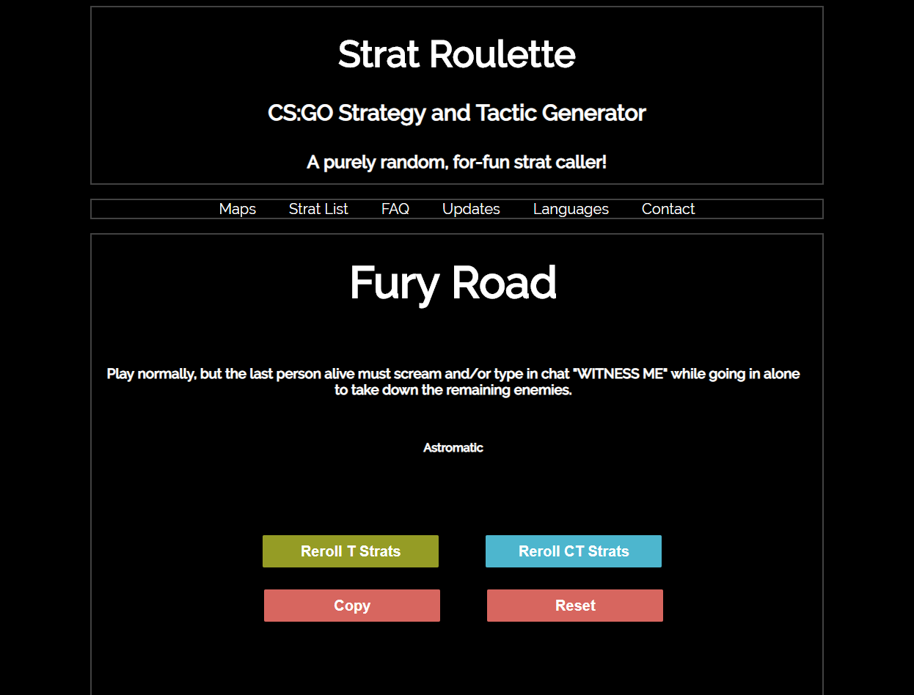
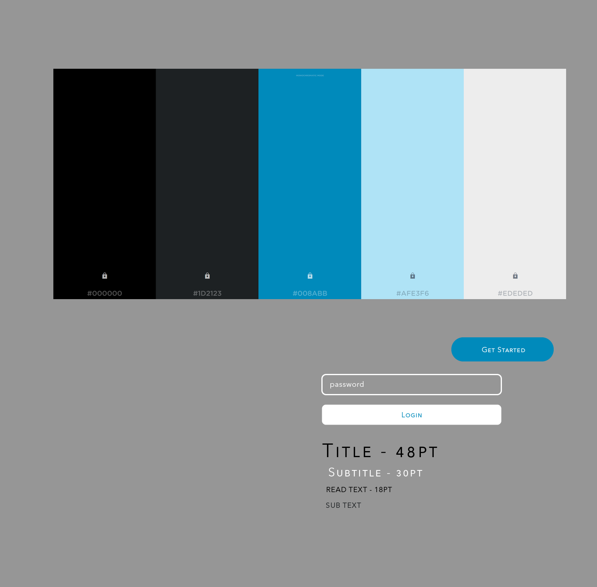
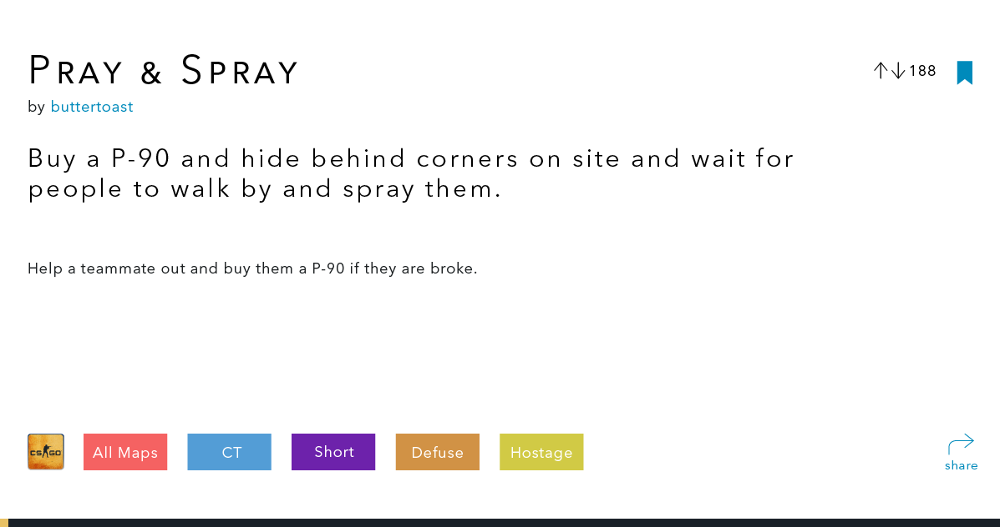
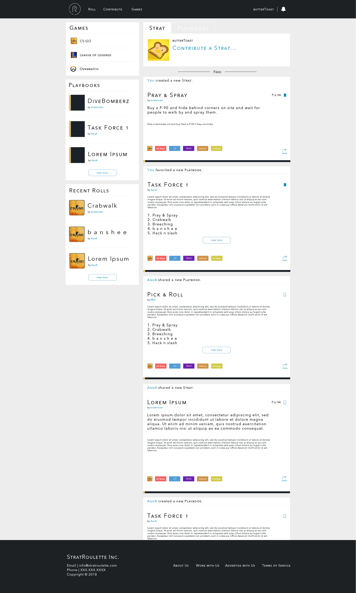

StratRoulette
Role: Primary Designer
Duration: August 2017 - Present
StratRoulette [SR] is a project created by my good friend Justin Chen from CMU. SR essentially rolls the dice for you and randomly decides, based on community sourced plays or strats, how you should play each round of CounterStrike. I primarily work on and, in a way, pioneer StratRoulette’s identity and feature development, but I also take part in the front end development in React.
Problem
One of the obvious "problems" with StratRoulette was that it was bootstrapped together with minimal thought on branding, layout, information heirarchy, and overall aesthetics. However, the main problem was that StratRoulette was in ALPHA stages, and if we wanted to develop more features, we would need a foundation for design. With a foundation of layout and common ui components, Justin could spend more time on developing features. StratRoulette also lacked in things like feature discovery and promoting user engagement. Overall usability was lacking as well since StartRoulette only grew threw word of mouth, but it ultimately was not intuitive to a new user.
 StratRoulette in the early stagesSolution
StratRoulette took off a few years back, and I was asked to do a redesign to not only develop an identity for the application but also create and design user flows that would help foster community engagement. With that, I was tasked to brainstorm an identity for StratRoulette, develop layouts and pages for the developers with usability in mind. For every page I designed, I looked up common conventions and patterns that users are accustomed to from apps like Soundcloud. We wanted to encourage user enagement, so we wanted to create a home page feed to show user activity, but also provide a convenient way to contribute Strats. A landing page was also needed since we want to showcase what StratRoulette is used for and what it can do. We incorporated user accounts so that users could save their content as well as discuss and vote on other content.
 StratRoulette landing page, a place to showcase what StratRoulette does
StratRoulette landing page, a place to showcase what StratRoulette does
Process
When it came to designing StratRoulette, I wanted to make sure that we were consistent with overall styling of the application. My first order of business was mainly just to create a small foundation of UI components: font, colors, input, grid, and more. Once that foundation was layed out, StratRoulette had some sort of identity, thus we could move on with creating layouts and certain user flows like landing page, submitting a start, etc.
I really wanted to make sure the whole website was made so that it could be catered towards different types of games, as we were thinking of expanding from CS:GO. I ultimately was just tired of seeing really bright or neon and crazy looking text on websites to fit the brand of the game, and since SR is not really tied to a game, I figured I could just start from scratch and keep it minimal. I first just started out by picking some colors, really just anything I felt, and at that time I felt like electric blue and a dark black/grey would be pretty fitting as accent colors. All the icons made in SR were also created by me with a little bit of illustrator magic.
 StratRoulette initial component spec sheetThe Logo
The first order of business for StratRoulette was for me to create a logo. The biggest motivation for me was to not make it look to “gamer,” and also not too boring. What I shortly realized was that making some sort of logo or monogram with the letters “S” and “R” were quit tricky.
The first iterations were based on a hexagonal shape, similar to a revolver barrel. I wanted to really emphasize the roulette part, and I thought it would be interesting with the idea “russian roulette.” However, it was hard for me to execute and figure out where the S would ultimately be.
Then, I tried more of a symmetric approach, as I tried to make the S and the R shapes look more similar, but it just seemed to take too much space
Next was some sort of lightning bolt to convey the fast paced nature of SR, and the R was placed as more of an exponent and not the main focus.
However, the last iteration was something completely unorthodox. I was really inspired by something like Parley’s icons with some sort of circle border, and I just toyed around with switching the emphasis of the letters. Ultimately, I came to this by just trying it out, but I seemed to like it more: the letter “R” seemed to fit better with a Circle, as it wasn’t clashing with either sharp edges or curved edges of the bends. This logo is used for the main page, as well as the favicon. Note that the favicon does not have the “StratRoulette” text in the circle, as it is too small to be read or seen.
The Strat Card
The most important part was to showcase the Strat card because it was the one thing that users directly interacted with. We wanted to show what new things we added: color coding towards games, a save and share button, tags, etc, and furthermore this would be a component that shows up everywhere. We wanted to provide a way for people to contribute strats, search/filter for strats, roll strats (when they play the game), and comment on strats.
 The strat card showcasing tags, votes, share button, and improved information hierarchy.A big problem with StratRoulette's original strat card was that there was no separation of information: there was a string of text for a strat and the name of the user who submitted it. Furthermore, the information blended into the webpage, there was no way for a user to really understand that a strat was present upon the first roll or page load. Thus, the idea of a strat card came into play: we wanted to effectively provide information to the user. Since strats are viewed quickly during games, it is important to have proper information hierarchy: valuable time is lost to the user if they have to look carefully, and sometimes users do not have the patience to look around for information.
StratRoulette's early version of a start: you could not distinguish what information was important or not.Home Page
The Home page is quite similar to something you would typically see in most social media feeds. The idea was that we wanted to show the activity feeds of people that a user follow and show what Strats are being favorited or created. Essentially this page is where people share strat cards, playbooks (collections of strats), and more. I was ultimately inspired by how SoundCloud takes the “social media” approach of sharing music, where people post songs or repost songs, instead of acting like a typical music library. The same goes for SR, we wanted it to act not only as a repository of strats that people contribute, but we want to be able to showcase them and share them easily.
 StratRoulette's homepage feed showcasing trending strats and easy access for the user to contributing content